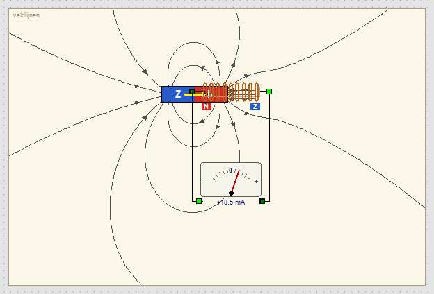

Lernpfad › Magnetismus › Lektion 7 von 9
In Lektion 2 erzeugte ein Strom einen Magneten, und in Lektion 6 drehte die Lorentzkraft einen Motor. Geht es auch umgekehrt: Kann ein Magnet einen Strom erzeugen? 1831 entdeckte der englische Physiker Michael Faraday, dass das geht, aber nur, wenn sich das Magnetfeld in einer Spule ändert. Ein Magnet, der still in einer Spule liegt, bewirkt nichts.
Eine Spule mit 200 Windungen ist an ein Nullpunktmessgerät (ein Galvanometer) angeschlossen. Seine Null ist in der Mitte, sodass man auch die Stromrichtung sieht. Es gibt keine Quelle: Die Spannung muss aus der Spule selbst kommen. Links von der Spule liegt ein Stabmagnet auf der Feldlinienplatte.

Die Feldlinien des Magneten, die durch die Spule gehen, nennt man den magnetischen Fluss. Solange sich dieser Fluss ändert, entsteht in jeder Windung eine kleine Spannung, und alle Windungen zusammen ergeben die Induktionsspannung. Sie ist umso größer,
Nimmt der Fluss zu (der Magnet geht hinein), fließt der Strom in die eine Richtung; nimmt er ab (der Magnet kommt heraus), in die andere.
Sehen Sie sich das Bild an: Während der Nordpol des Magneten in die Spule gleitet, macht der induzierte Strom die Spule selbst zu einem Magneten, mit einem Nordpol auf der Seite des Magneten. Gleichnamige Pole stoßen sich ab: Die Spule drückt den Magneten zurück (der kleine gelbe Pfeil). Zieht man den Magneten heraus, bekommt die Spule dort einen Südpol und hält ihn zurück.
Man muss also immer ein wenig Kraft aufwenden, um den Magneten zu bewegen. Diese Arbeit landet als elektrische Energie im Stromkreis. Die Energie kommt nicht aus dem Nichts: Sie kommt aus Ihrem Arm.
1. Liegt der Magnet still in der Spule, gehen sehr viele Feldlinien durch die Spule. Warum zeigt das Messgerät trotzdem null?
2. Sie möchten einen möglichst großen Strom. Was tun Sie alles?
1. Nicht das Feld selbst, sondern die Änderung des Feldes erzeugt eine Spannung. Liegt der Magnet still, ändert sich der Fluss nicht, und es gibt keine Induktion.
2. Den Magneten möglichst schnell bewegen, einen Eisenkern in die Spule stecken, einen starken Magneten nehmen und eine Spule mit vielen Windungen verwenden. Deshalb dreht sich der Magnet in einem echten Fahrraddynamo oder Kraftwerk sehr schnell: Das sehen Sie in der nächsten Lektion.